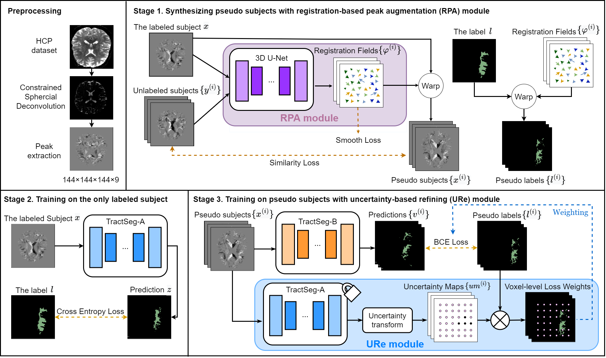

A Registration- and Uncertainty-based Framework for White Matter Tract Segmentation With Only One Annotated Subject
1University of Sydney 2Harvard Medical School
1University of Sydney 2Harvard Medical School
White matter (WM) tract segmentation based on diffusion magnetic resonance imaging (dMRI) plays an important role in the analysis of human health and brain diseases. However, the annotation of WM tracts is time-consuming and needs experienced neuroanatomists. In this study, to explore tract segmentation in the challenging setting of minimal annotations, we propose a novel framework utilizing only one annotated subject (subject-level one-shot) for tract segmentation. Our method is constructed by proposed registration-based peak augmentation (RPA) and uncertainty-based refining (URe) modules. Registration-based data augmentation is employed for synthesizing pseudo subjects and their corresponding labels to improve the tract segmentation performance. The proposed uncertainty-based refining module alleviates the negative influence of the low-confidence predictions on pseudo labels. Comparison results indicate the effectiveness of our proposed modules, by achieving accurate whole-brain tract segmentation with only one annotated subject.

@inproceedings{Xu_2023_ISBI,
title={A Registration- and Uncertainty-based Framework for White Matter Tract Segmentation With Only One Annotated Subject },
author={Xu, Hao and Xue, Tengfei and Liu, Dongnan and Zhang, Fan and Westin, Carl-Fredrik and Kikinis, Ron and J. O'Donnell, Lauren and Cai, Weidong},
booktitle={2023 IEEE 20th International Symposium on Biomedical Imaging (ISBI)},
year={2023},
organization={IEEE}
}
This web page was generated by ChatGPT.
 Code
Code